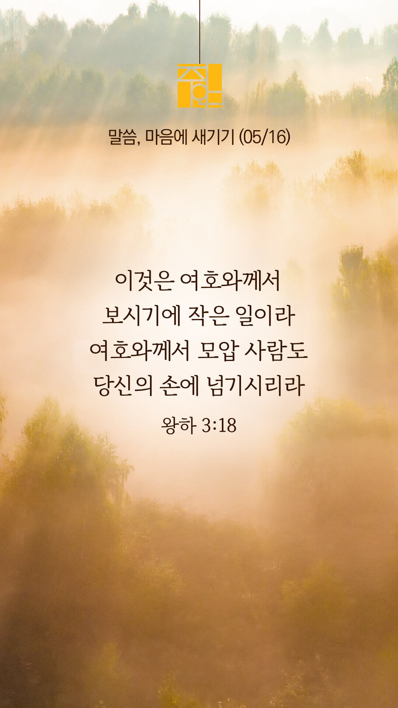
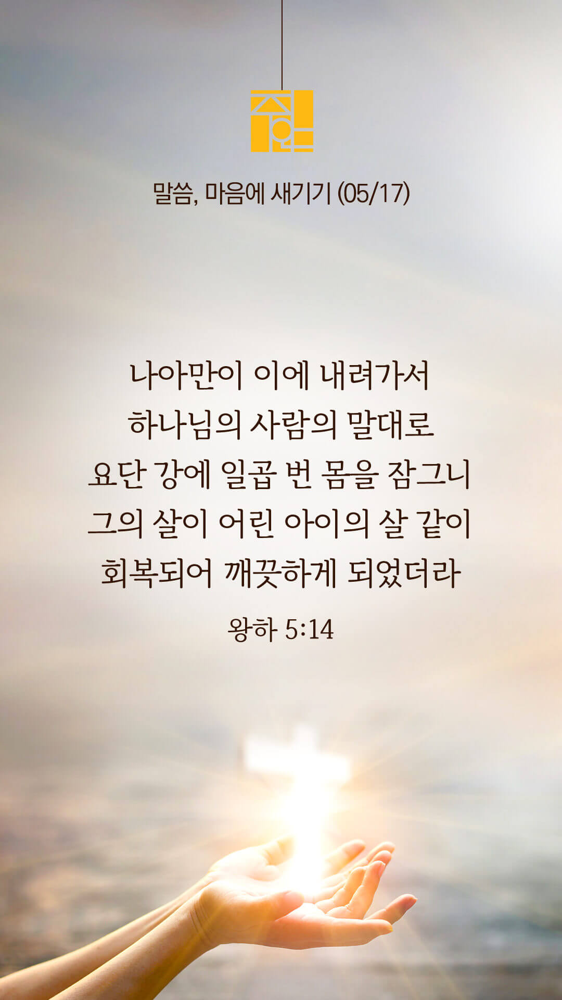
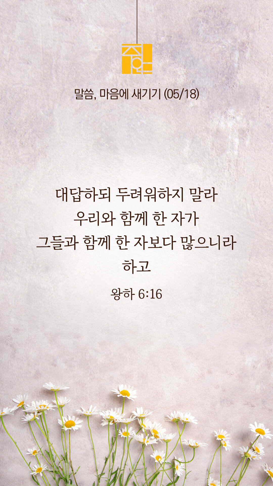
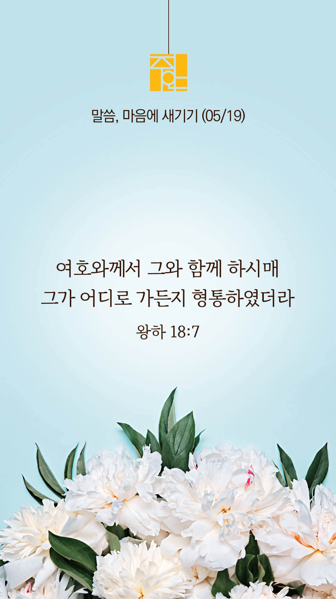
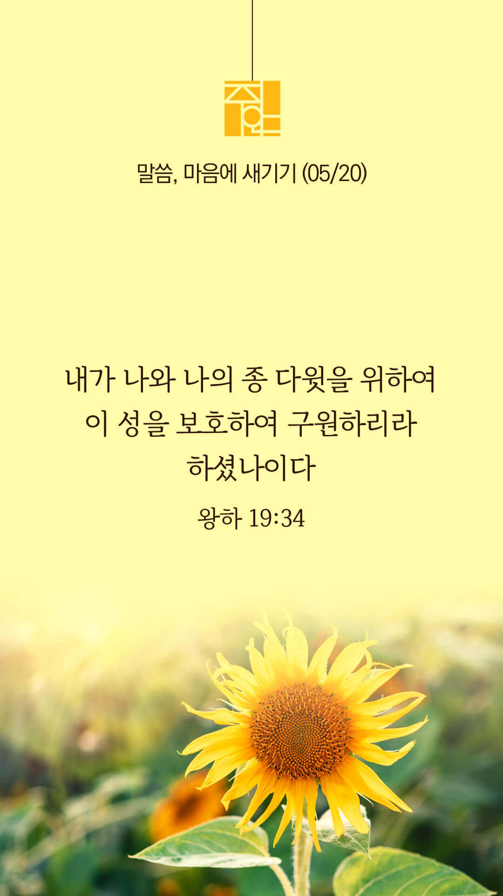
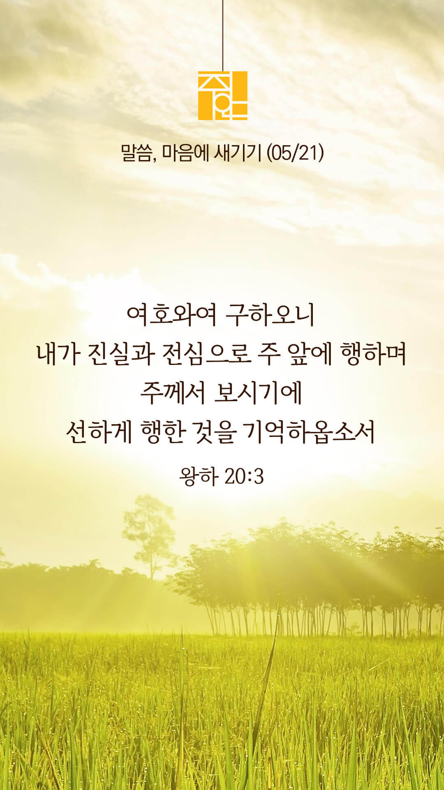

주의 말씀은 내 발에 등이요
내 길에 빛이니이다 (시119:105)
오늘의 말씀입니다
음악 소리가 크면 조절하시기 바랍니다

마음의 묵상
왕하 3:18
“이것은 여호와께서 보시기에 작은 일이라 여호와께서 모압 사람도 당신의 손에 넘기시리”
1. 위의 말씀은 이스라엘 왕 여호람과 유다 왕 여호사밧이 물이 없어 고난을 겪던 중 엘리사를 찾아갔을 때의 장면을 묘사하고 있습니다. 엘리사는 악한 왕 여호람을 외면하고 싶었지만 신실했던 여호사밧 왕을 봐서 그들을 위해 하나님께 기도하고 예언을 해주었습니다.
저를 항상 인도해주시는 주님을 신뢰합니다
마음의 묵상
왕하 3:18
“이것은 여호와께서 보시기에 작은 일이라 여호와께서 모압 사람도 당신의 손에 넘기시리”
2. 여호람은 악했지만 선한 여호사밧과 동역관계를 맺었기에 하나님의 복을 같이 받았는데요 당신에게도 여호사밧과 같은 동역자가 있나요? 당신은 여호사밧과 같은 사람인가요?
3. “주님, 저에게 믿음의 동역자를 주시고 저도 누군가의 선한 동역자가 되게 해주소서” 간절히 기도합시다
저를 항상 인도해주시는 주님을 신뢰합니다
주의 말씀은 내 발에 등이요
내 길에 빛이니이다 (시119:105)
오늘의 말씀입니다
음악 소리가 크면 조절하시기 바랍니다

마음의 묵상
왕하 5:14
“나아만이 이에 내려가서 하나님의 사람의 말대로 요단강에 일곱 번 몸을 잠그니 그의 살이 어린 아이의 살 같이 회복되어 깨끗하게 되었더라”
1. 나아만이 하나님의 사람 엘리사의 말대로 순종했을 때 어떤 일이 벌어졌나요?
2. 당신이었다면 나아만처럼 순종했을까요? 아니면 그냥 실망하고 집으로 돌아갔을까요?
3. “주님, 저에게 순종하는 믿음을 주소서” 간절히 기도합시다
순종이 제사보다 낫고 듣는 것이
숫양의 기름보다 나으니
(삼상 15:22)
주의 말씀은 내 발에 등이요
내 길에 빛이니이다 (시119:105)
오늘의 말씀입니다
음악 소리가 크면 조절하시기 바랍니다

마음의 묵상
왕하 6:16
“대답하되 두려워하지 말라 우리와 함께 한 자가 그들과 함께 한 자보다 많으니라 하고”
1. 위의 말씀은 아람 군대가 엘리사가 있던 성읍을 에워쌓을 때 사환이 그 장면을 보고 두려워하니 엘리사가 사환의 눈을 뜨게 하여 여호와의 군대가 아람보다 훨씬 많음을 보게 하는 장면입니다
2. 당신은 하나님의 천군천사가 늘 당신을 지키시고 보호하심을 믿으시나요?
3. “주님, 저와 저희 가정을 주님의 군대로 에워싸 보호하소서” 간절히 기도합시다
주께서 지키시니 두렵지 않습니다
주의 말씀은 내 발에 등이요
내 길에 빛이니이다 (시119:105)
오늘의 말씀입니다
음악 소리가 크면 조절하시기 바랍니다

마음의 묵상
왕하 18:7
“여호와께서 그와 함께 하시매 그가 어디로 가든지 형통하였더라 저가 앗수르 왕을 배반하고 섬기지 아니하였고”
1. 위의 말씀은 히스기야 왕에 대한 말씀으로 그가 여호와를 의지할 때 하나님께서 함께 하셨음을 증언하고 있습니다
2. “주님, 저에게 히스기야와 같은 신실한 믿음을 주소서” 간절히 기도합시다
3. “주님, 저희 가정과 함께 하시어 저희 가족이 어디로 가든지 형통하게 해주소서” 간절히 기도합시다
히스기야가 이스라엘 하나님 여호와를 의지하였는데
그의 전후 유다 여러 왕 중에 그러한 자가 없었으니
(왕하 18:5)
주의 말씀은 내 발에 등이요
내 길에 빛이니이다 (시119:105)
오늘의 말씀입니다
음악 소리가 크면 조절하시기 바랍니다

마음의 묵상
왕하 19:34
“내가 나와 나의 종 다윗을 위하여 이 성을 보호하여 구원하리라 하셨나이다 하였더라”
1. 위의 말씀은 앗수르의 위협과 조롱에 두려워 떠는 히스기야에게 주신 하나님의 말씀입니다
2. 당신을 두렵게 하는 것들로부터 하나님께서 친히 보호하시고 함께 하실 줄 믿으시나요?
3. “주님, 저와 저희 가정을 악한 세력으로부터 늘 보호해주소서” 간절히 기도합시다
하나님은 우리와 늘 함께 하십니다
주의 말씀은 내 발에 등이요
내 길에 빛이니이다 (시119:105)
오늘의 말씀입니다
음악 소리가 크면 조절하시기 바랍니다
